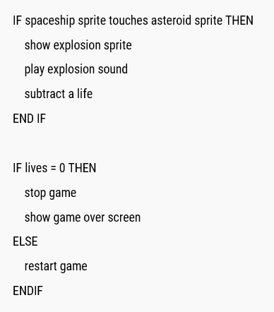

Ali Sultani
On:14th July 2021
How to Solve a Problem
It is very easy to get lost in the details when trying to solve a problem, you could spend hours scratching your head but getting to find a solution to the problem. The best way to approach solving a difficult problem is to look at the bigger picture by stepping back and taking a break, yeah literally. You want to attach a big problem in small pieces at a time because if you try to solve it at once then you will end of dividing your attention between all different aspect of the problem and really cannot use your full potential of attention. The practical way to do this is to write down each step of the problem and try to solve once step first then move to the next. There might be times where you cannot breakdown a problem into smaller bite size, but trust me it is because you are not looking at the bigger picture.
As I was solving the FizzBuzz challenge on [Repli.it](http://repli.it) for some reason my code was returning fizz while it should have been returning fizzBuzz and that would fail the test. So I probed the problem by putting some console.log statement in different section of my function so see exactly what piece of code was causing the problem. This helped me to breakdown the problem into smaller and manageable pieces. Even though, everything seemed fine but the code was not behaving as it should have. So I decided to write some pseudocode as to what my function should be doing at each step. Pseudocode is just writing what your code should be doing in plain english using comments so you can write your solution in code according to your pseudocode. In other word it s your draft code.
It is very easy to get lost in the details when trying to solve a problem, you could spend hours scratching your head but getting to find a solution to the problem. The best way to approach solving a difficult problem is to look at the bigger picture by stepping back and taking a break, yeah literally. You want to attach a big problem in small pieces at a time because if you try to solve it at once then you will end of dividing your attention between all different aspect of the problem and really cannot use your full potential of attention. The practical way to do this is to write down each step of the problem and try to solve once step first then move to the next. There might be times where you cannot breakdown a problem into smaller bite size, but trust me it is because you are not looking at the bigger picture.
Googling problems was also very helpful. I didn't how to find the divisible of a number so I searched it up and found out the solution which was quite straightforward. I personally find stackoverflow very helpful they have solutions to almost all the coding problem that exists but you might want to look all the answers as often the selected solution might not be the best there might be better solution and more efficient ones a couple of answers down. It is just a matter of shopping around for the best solution and selecting the first one you come across as a matter of convenient.